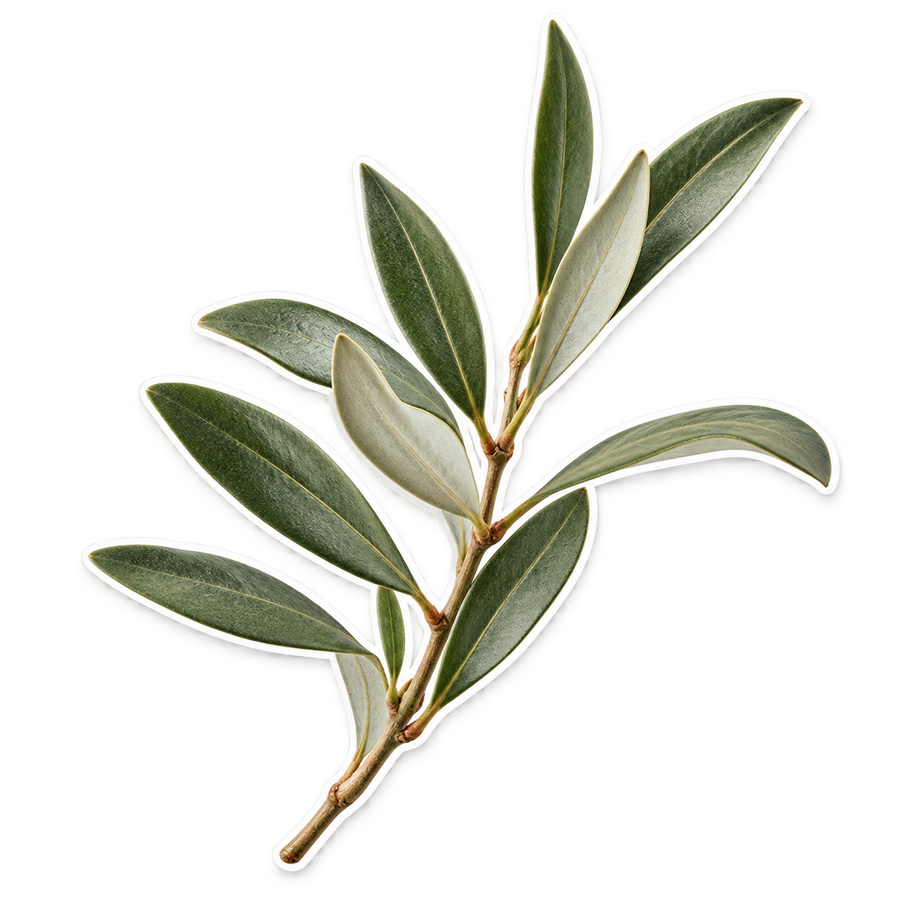
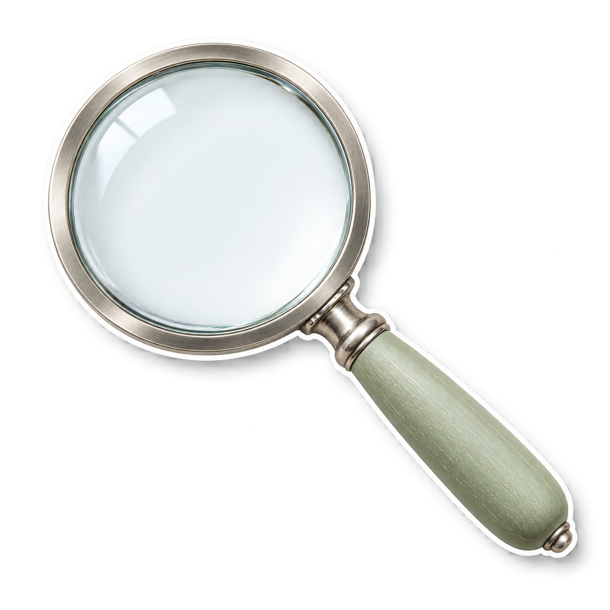
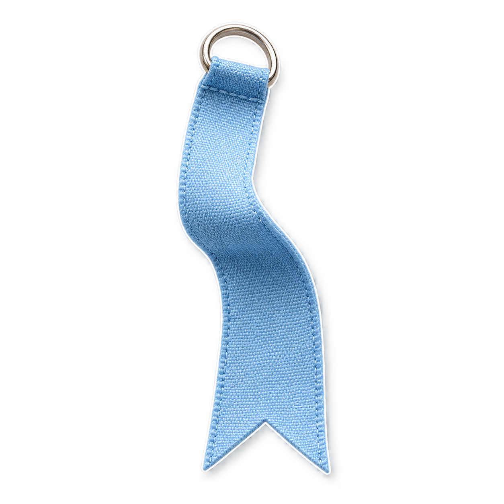
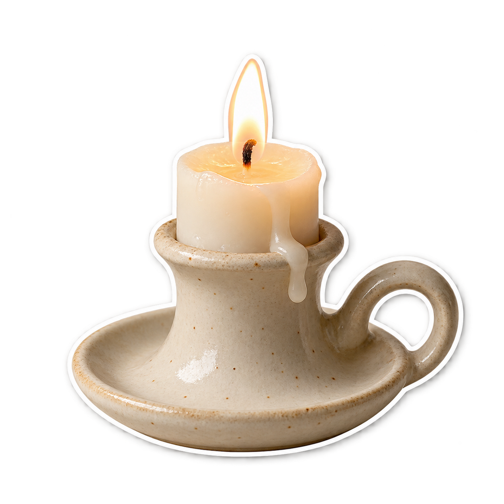
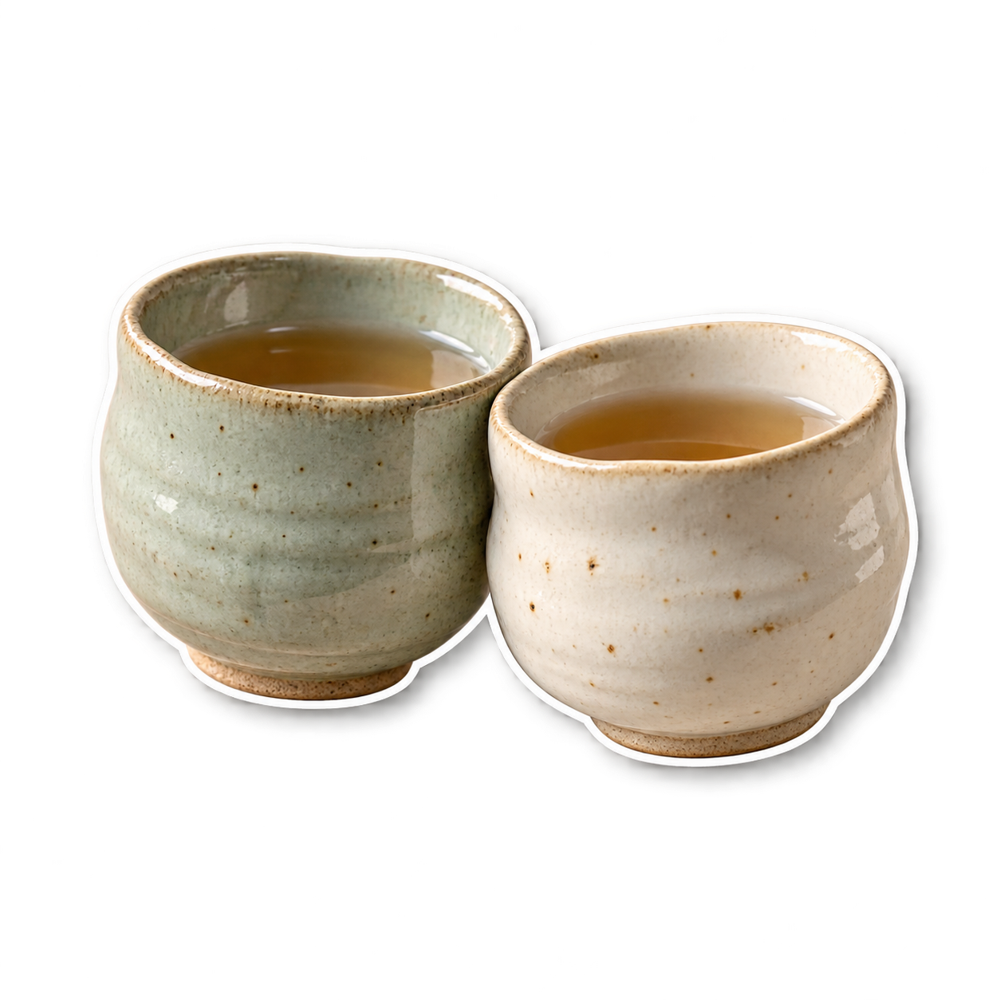
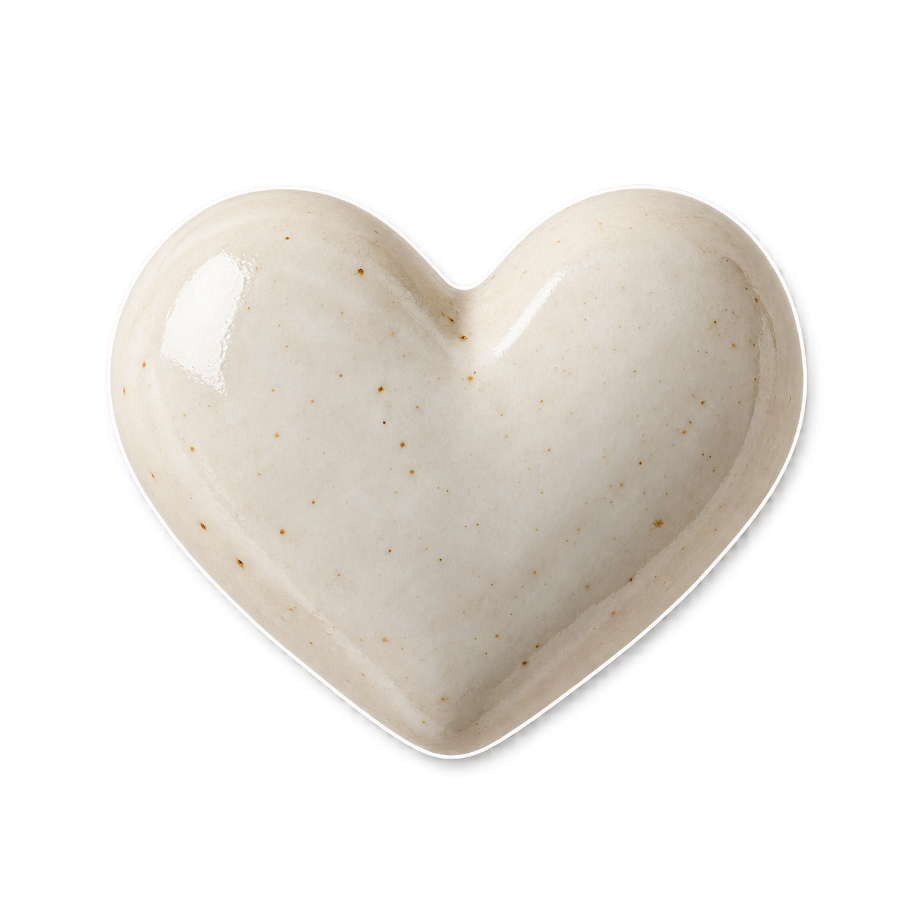
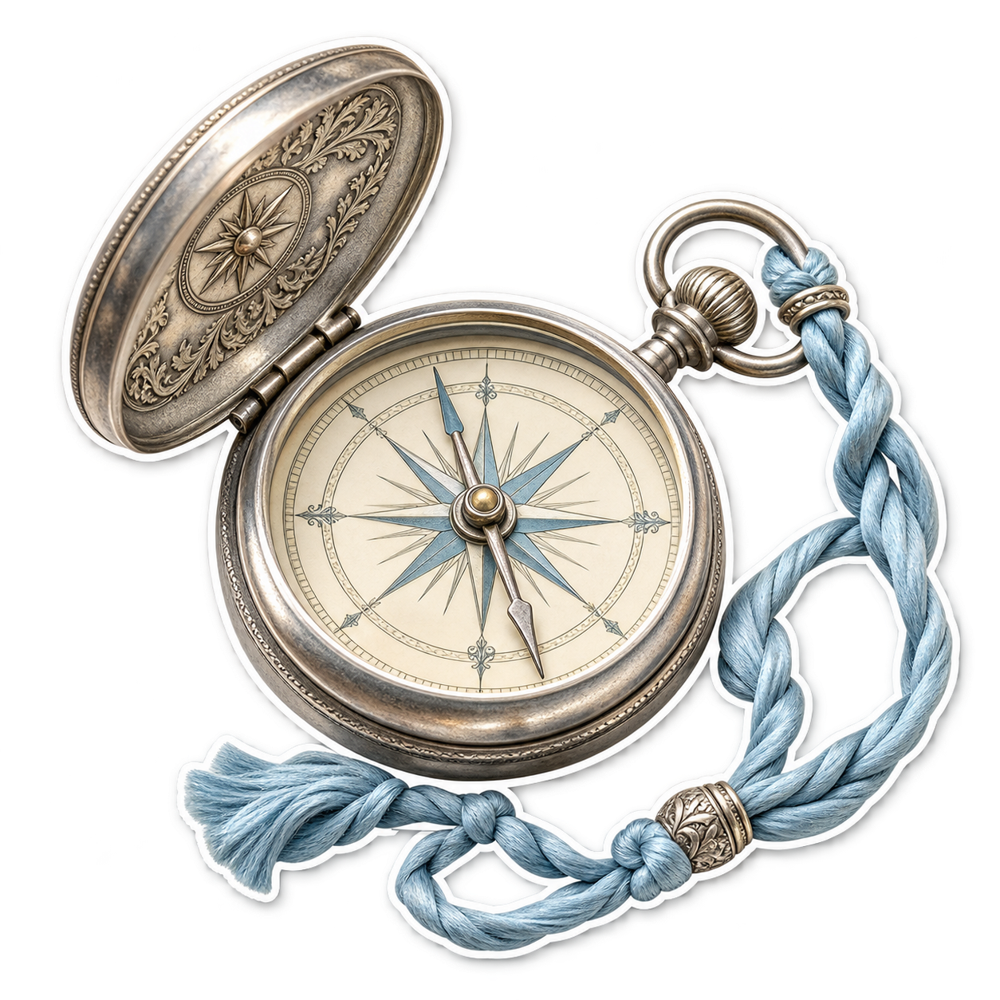
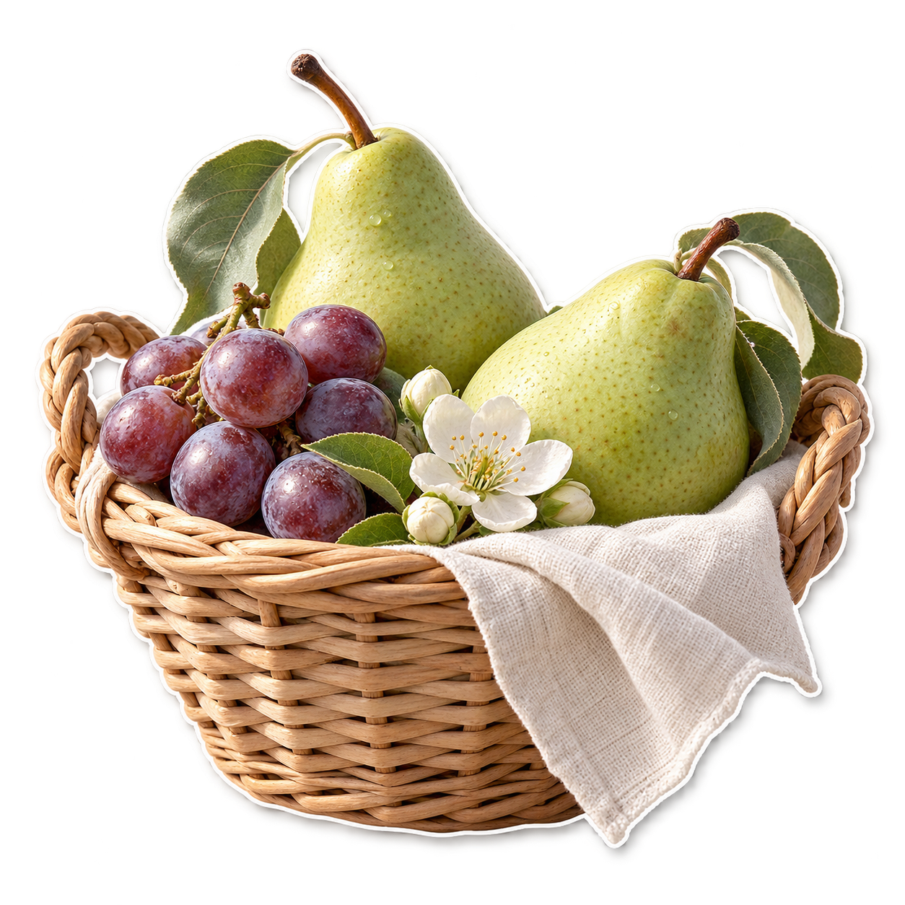
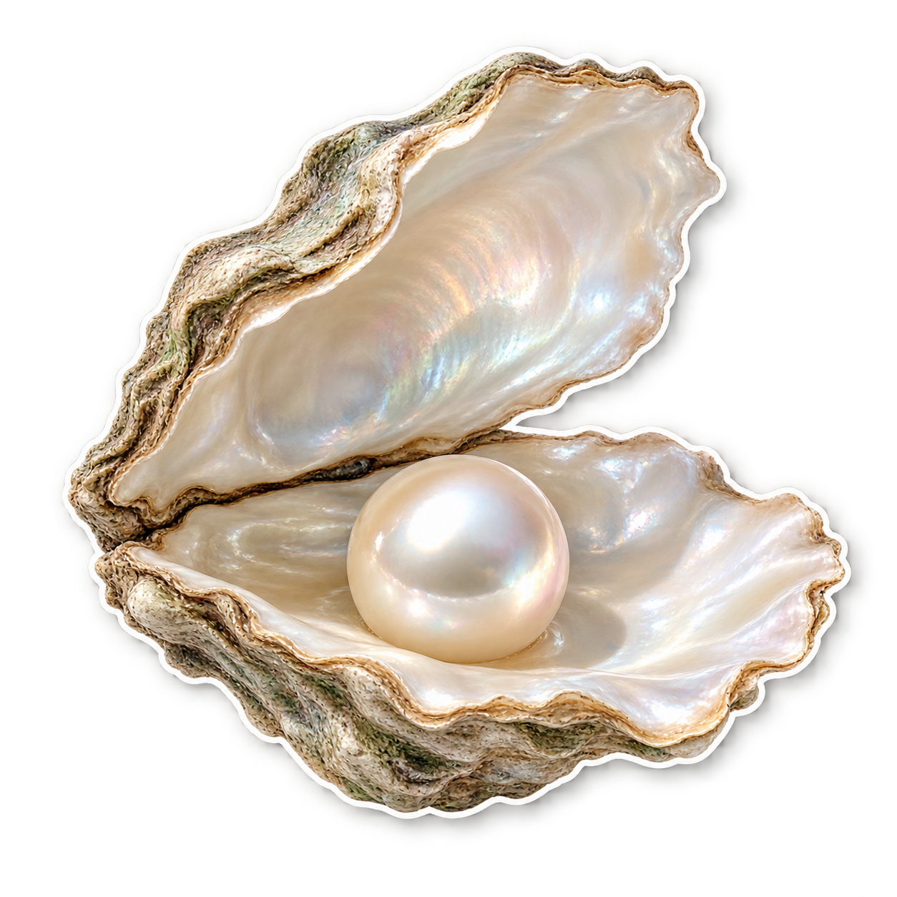

Cosmos flower
Home greeting
Download PNGTwenty-five reusable assets, including a soft cloud background. Transparent backgrounds, white paper edges, soft shadows. Keep these for illustrations; use the existing line icons for actions.
Home greeting
Download PNG
Topic choices & Peace
Download PNGToday’s Reading
Download PNGPassage study introduction
Download PNG
Verse Search
Download PNG
Saved collection
Download PNG
Reflection
Download PNG
Community
Download PNGReading milestones
Download PNGQuiet beginning plan
Download PNGStrength plan
Download PNGPeace plan
Download PNG
Onboarding intention
Download PNGBible familiarity
Download PNGReading rhythm
Download PNGOptional reading reminder
Download PNGOnboarding completion
Download PNGDiscover guidance and selected topics
Download PNGTopic artwork
Download PNG
Topic artwork
Download PNGTopic artwork
Download PNG
Topic artwork
Download PNG
Topic artwork
Download PNGTopic artwork
Download PNGOnboarding and membership background
Download PNG